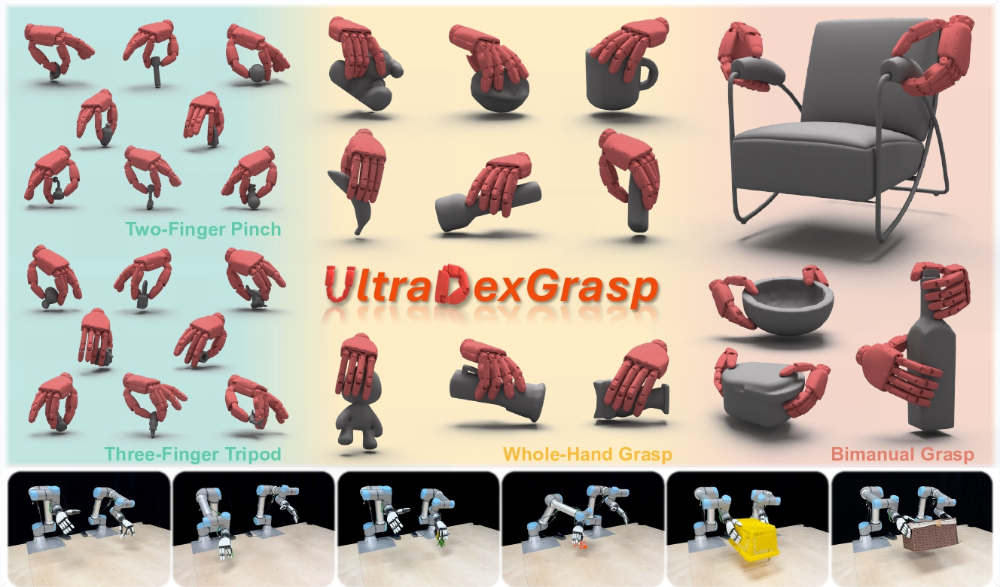
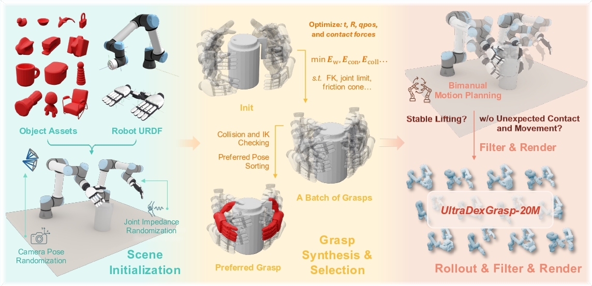
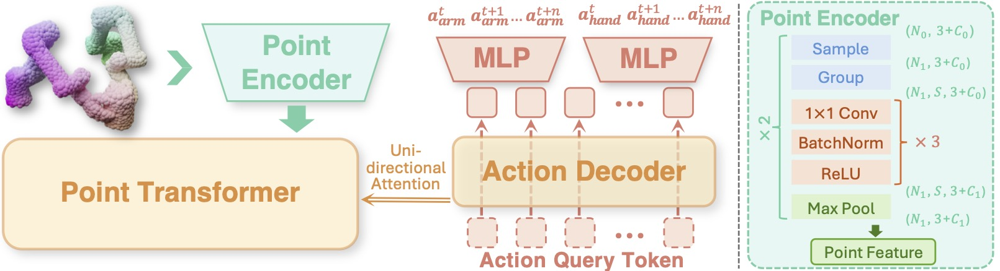

We first collect diverse object assets and import the objects and the robot URDF files into the simulator. An optimization-based grasp synthesizer is then used to generate feasible grasps, from which the preferred grasp is selected. Finally, motion planning is employed to generate demonstration trajectories.

The proposed grasp policy takes point clouds as input, encodes them using a point encoder, aggregates scene features via unidirectional attention, and predicts control commands. The policy supports multiple grasp strategies and improves generalization across diverse objects.
@article{yang2026ultradexgrasp,
title={UltraDexGrasp: Learning Universal Dexterous Grasping for Bimanual Robots with Synthetic Data},
author={Yang, Sizhe and Xie, Yiman and Liang, Zhixuan and Tian, Yang and Zeng, Jia and Lin, Dahua and Pang, Jiangmiao},
journal={arXiv preprint arXiv:XXXX.XXXXX},
year={2026}
}